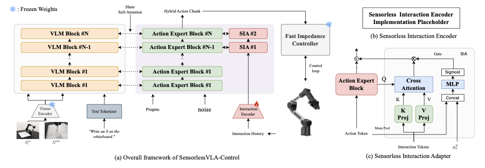
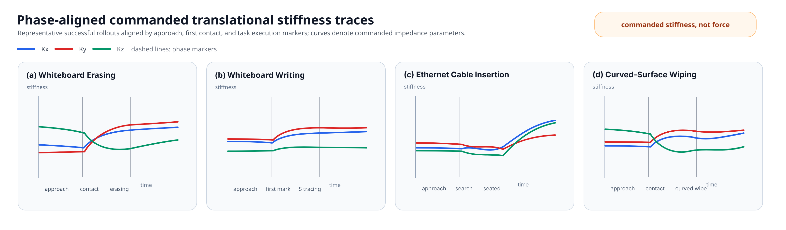

Anonymous Supplementary Website
SensorlessVLA: A Sensorless Joint VLA-Control Contact-Rich Manipulation Framework
Contact-rich manipulation without additional external force/torque or tactile sensors.
No external F/T or tactile sensors
Real-robot contact tasks
Motion + gripper + stiffness
Summary video placeholder
60-90 second overview clip
Reserved for anonymous review-safe clips.
Representative Rollouts
Task Videos
Video slots are reserved for anonymous review-safe rollout clips. Placeholders remain visible until real files are added.
Video placeholder
Whiteboard Erasing
Sustained planar contact while removing marker traces.
Video placeholder
Whiteboard Writing
Fine marker contact while drawing a continuous S-shaped trace.
Video placeholder
Ethernet Cable Insertion
Contact-guided alignment and seating under tight connector tolerance.
Video placeholder
Curved-Surface Wiping
Tool contact while the surface normal changes along the stroke.
Comparison Clips
Reserved for matched representative clips from the primary controls.
Motion-only baseline
Fixed-stiffness baseline
SensorlessVLA-Control
Method
Interaction-Conditioned VLA-Control
A slow VLA predicts a hybrid action chunk; a fast impedance controller executes the commanded stiffness during contact.

Sensorless Interaction Adapter
Residual-history tokens condition late action-expert blocks through gated cross-attention.
Fast Impedance Execution
Predicted log-stiffness is converted into controller-rate Cartesian translational stiffness.
Bilateral Teleoperation Supervision
Demonstrations provide controller-derived compliance-intent labels without external F/T or tactile sensing.
Real-Robot Evidence
Results And Ablations
Reported averages follow the manuscript tables for four real-world contact tasks.
Main Results
| Method | Average success | Role |
|---|---|---|
| SensorlessVLA-Motion-Only | 32.5% | Same-family motion-only baseline |
| SensorlessVLA-Fixed-Stiffness | 55.0% | Same-architecture fixed-stiffness baseline |
| SensorlessVLA-Control | 72.5% | Full method |
Core Ablations
- No Residual History
- 50.8%
- Direct Residual Fusion
- 57.5%
- Fixed Stiffness
- 55.0%
- No Cartesian Impedance Path
- 32.5%
- Same Motion + Fixed Labels
- 47.5%
- SensorlessVLA-Control
- 72.5%

Supplement
Anonymous Review Materials
The appendix is included with the paper submission. Code, data, identity details, and public release links are omitted from this anonymous review version. This page is designed for anonymous URL hosting and can also be packaged with its local assets as supplementary material.